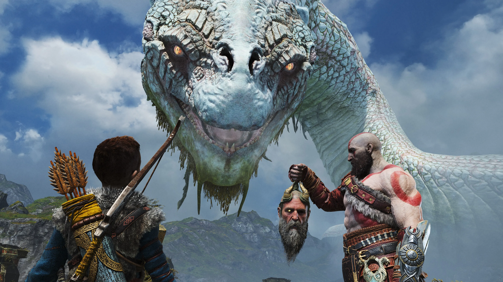
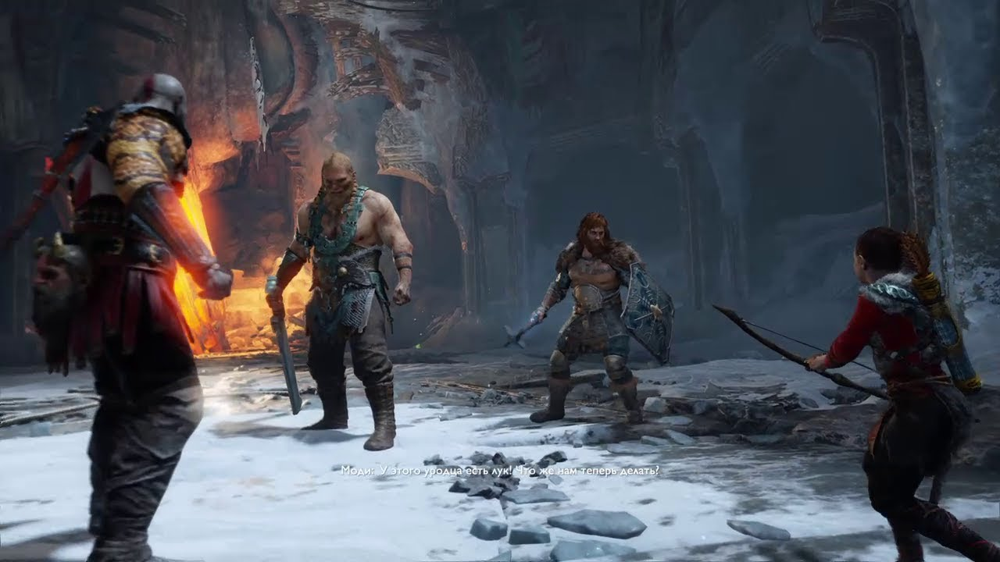
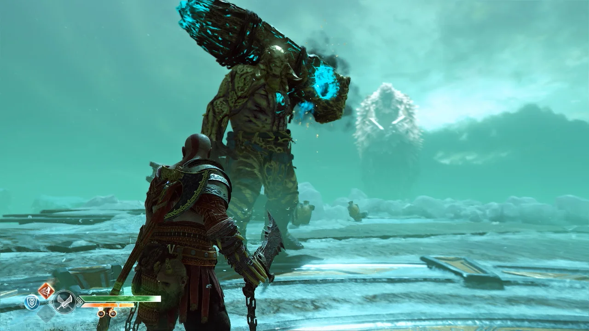
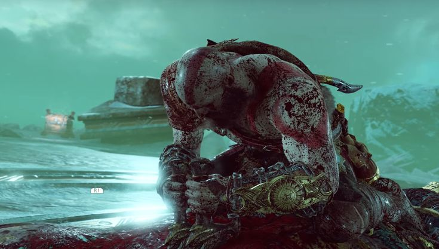
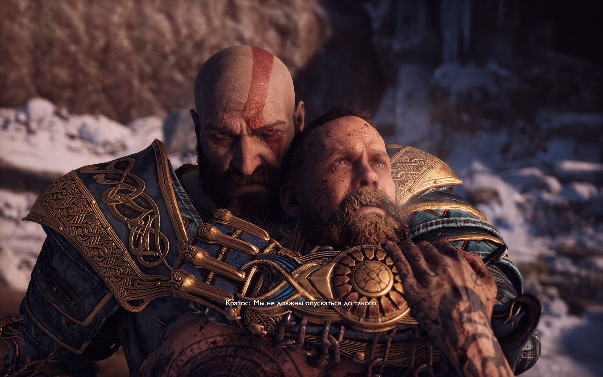
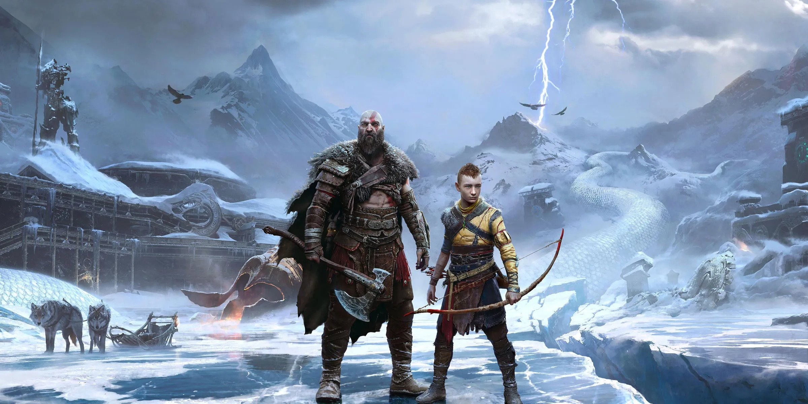
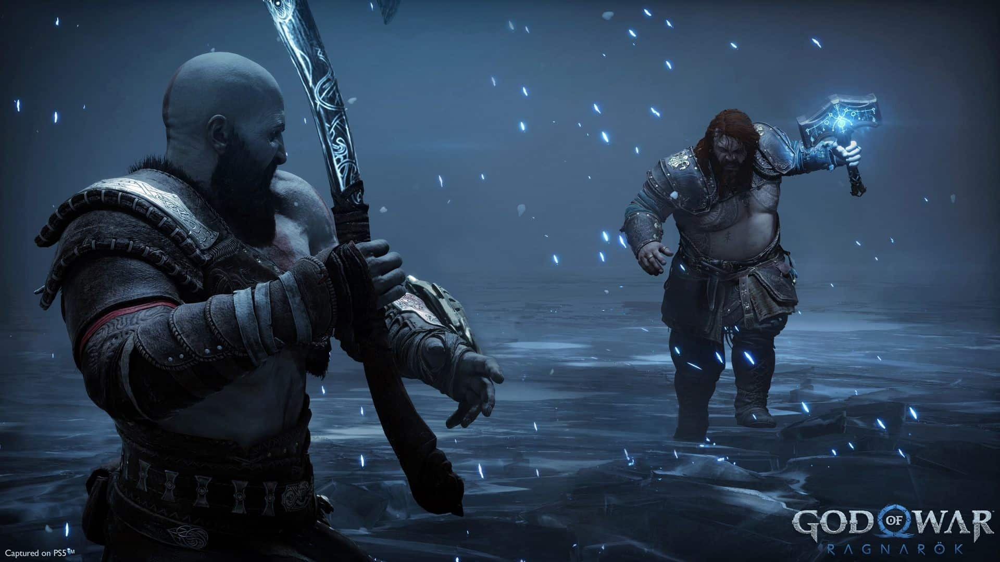

У храмі Тюра в Мідгарді, Кратос, командувач арміями дев'яти світів, сурмить у Гьяллархорн і починає облогу
Асгарда. Сіф і Труд, дружина і дочка Тора, переходять на бік Кратоса
і Атрея, ельфи і вани виявляються
відрізані, а решта армії відволікається порятунком мирних мідгарців від Сурта. У битві з Тором Кратос
практично
переконує того бути зброєю
в руках батька, але Одін вбиває Тора за відмову битися. Одін б'ється з
Кратосом,
Атреєм, Фреєю і Міміром, але зазнає поразки, коли Атрей розбиває маску. Атрею вдається укласти
душу Одіна
в
камінь, але Сіндрі його розбиває як помсту за смерть брата. Сурт знищує Асгард, і Фрейр жертвує собою,
даючи можливість решті втекти за допомогою Ангрбоди і
Фенріра.
Сюжет
Головні герої гри - спартанський воїн-напівбог Кратос і його син
Атрей. Кратос - син Зевса, який став грецьким богом
війни, - оселився після руйнування Олімпу на далекій
півночі, де зустрів свою другу дружину, яка померла
незадовго до подій гри, - жінку-воїна Фей, яка народила від спартанця сина Атрея.
Дія починається невдовзі після смерті другої дружини Кратоса і матері Атрея Фей, останньою волею якої було
розвіяти її останки з найвищої вершини всіх дев'яти світів. Перед
подорожжю Кратоса він зустрічає
незнайомця з божественними силами, чиє тіло повністю вкрите татуюваннями. Той вимагає від Кратоса відповідей і
насміхається над його
минулим; конфлікт переходить у запеклу сутичку. Перемігши незнайомця, Кратос разом з
Атреєм вирушають у подорож.

Досягнувши озера Дев'яти, Кратос і Атрей зустрічають доброзичливого до них Ермунганда -
світового змія, останнього з живих гігантів Мідгарда. Далі вони
стикаються з
непроникним чорним туманом - темною магією небувалої сили, але на допомогу приходить
Лісова Відьма. Вона відправляє героїв у світ ельфів - Альвхейм, за
світлом, щоб
наповнити ним Бівріост і пройти крізь туман. Піднявшись на гору,
вони слухають розмову незнайомця (розкритого як Бальдр) із синами Тора: Магні та Моді, і
полоненого
Міміра. Після того, як боги пішли, Кратос і Атрей спілкуються з
Міміром; той повідомляє, що хоч дана гора і є найвищою в Мідгарді, вершина всіх
світів знаходиться в
Йотунхеймі - світі гігантів, куди можна потрапити
тільки через закритий портал. На прохання Міміра, Кратос відрубує йому голову, яку відносить Лісовій відьмі на
оживлення.
Ожилий Мімір зі здивуванням впізнає у відьмі богиню Фрейю;
роздратований Кратос не бажає довірятиїй, але Фрейя і Мімір попереджають його про те, що він повинен
розповісти Атрею про свою природу.
  
У пошуках інструментів для відкриття порталу в Йотунхейм Кратос, Атрей і Мімір стикаються з Магні і Моді. Після
того, як у сутичці Кратос убив Магні, Моді тікає, але
повертається і нападає на подорожніх знову. Не
впоравшись із гнівом Спарти, що прокинувся в ньому, Атрей непритомніє, що Фрейя і Мімір пояснюють протиріччям
між
божественною сутністю і відчуттям себе як смертного. Фрейя повідомляє, що для зцілення сина Кратос
повинен відправитися у світ мертвих Хельхейм і роздобути там серце
Охоронця
Мосту Проклятих; оскільки "Левіафан" безсилий у цьому світі, Кратос повертається
додому по свою попередню зброю - Клинки Хаосу - і зустрічає дух Афіни, що
нагадує воїну про його минуле. У Хельхеймі ж Кратосу
з'являється ілюзія Зевса. Забравши серце Охоронця, Кратос зцілює з його
допомогою Атрея і розкриває його природу;
дізнавшись про це, Атрей у дорозі стає надто зарозумілим і вбиває
ослабленого Моді, незважаючи на вимогу Кратоса не робити цього. Піднявшись на вершину Мідгарда, батько
і
син намагаються відкрити портал, але стикаються з Бальдром. У битві портал було зруйновано, а Кратос знову
опиняється в Хельхеймі.
Примирившись, Кратос і Атрей дізнаються про зв'язок Фрейї і Бальдра. Після повернення в Мідгард Мімір розуміє,
що існує інший прохід у Йотунхейм, але для цього необхідно
забрати його Око з
утроби Ермунганда - змій випадково проковтнув його, з'ївши статую Тора. Слідом за цим Кратос і Атрей знову
зустрічаються з Бальдром, який вступає з ними
в бій; Фрейя втручається в нього, намагаючись захистити сина.
У бою Атрею вдається вразити Бальдра стрілою з Омели, таким чином знявши з нього
закляття. Бальдр
виявляється переможений; Кратос дає йому пощаду в обмін на спокій для нього і його сім'ї,
чим він користується, щоб спробувати задушити Фрейю; у відповідь на це Кратос
змушений убити Бальдра.
Засмучена Фрейя клянеться помститися Кратосу і докоряє йому за те, що приховує свою природу від Атрея. Зрештою
Кратос розповідає синові про своє
минуле і про те, як убивав своїх родичів, включно зі своїм батьком
Зевсом. Атрей запитує про те, чи здатні боги на щось, окрім батьковбивства; у відповідь Кратос каже, що
вони обидва повинні вчитися зі свого досвіду і не повторювати помилок попередників. У мовчанні Фрейя йде з тілом
Бальдра; Мімір сподівається, що Кратос вчинив правильно і
Фрейя все ж оговтається від горя.

У Йотунхеймі мандрівники знаходять храм велетнів, а в ньому - розпис із зображенням їхньої мандрівки, зокрема
їхньої битви з Бальдром; вони розуміють, що велетні
передбачали все, що станеться в підсумку. Крім того,
вони дізнаються, що Фей також була велетнем, але обрала життя серед людей у Мідгарді; таким чином, в Атреї -
якого мати
хотіла наректи Локі - тече кров богів, велетнів і людей.
Розкривається, що Бальдр шукав саме Фей, будучи в невіданні про її долю. Виконуючи волю Фей, Кратос і Атрей
розвіяли
її прах на найвищій горі Йотунхейма. Повертаючись додому, Кратос розкриває синові, що його ім'я
колись носив відданий товариш-спартанець. Мімір же попереджає про те, що
починається Фімбулвінтер - трирічна зима, за якою послідує Рагнарок.
У секретній кінцівці Кратос і Атрей повертаються додому та йдуть спати. У сновидінні Атрей дізнається, що Тор
з'явиться в їхній дім із невідомою метою наприкінці
Фімбулвінтера.
Ігровий світ.
У той час як перші сім ігор із серії були засновані на грецькій міфології, нова частина заснована на
скандинавській міфології. Креативний директор гри Корі Барлог, пояснив
перехід на новий сетинґ: "це схоже
на перехід р. до н. е. - р. н. е. Ми рухаємося, починаючи з нуля, і трохи просунулися вперед у цьому".
Пояснюючи, чому скандинавські та
грецькі боги живуть разом, Барлог сказав, що різні культури, системи
вірувань уживалися, але були "розділені загеографічною ознакою", припускаючи, що Кратос вирушив із
Греції
до Норвегії (Скандинавії) після завершення God of War. Барлог також підтвердив, що дія гри відбуватиметься
задовго до вікінгів; це час, уякий їхні боги ходили по землі.
Протягом усієї гри гравці зможуть відвідати
частину з дев'яти світів скандинавської міфології.
Гра вийшла на початку 2018 року та потрапила до ТОП-10 найочікуваніших ігор на думку багатьох видань, зокрема
Forbes, Polygon, Stopgame. Гра отримала високі оцінки та
позитивні відгуки в ігровій пресі. Її середня
оцінка, за даними агрегатора Metacritic, склала 94 зі 100.
Продовження гри: God of War: Ragnarök

9 листопада 2022 р. вийшло продовження гри під назвою: God of War: Ragnarök, сюжет, як і сюжет попередньої гри,
побудований навколо подальших пригод головних героїв
Кратоса і його сина Атрея у світі скандинавської
міфології; дія гри розгортається на території стародавньої Норвегії. Очікується, що гра покладе початок подіям
Рагнарека, які
призводять до загибелі багатьох скандинавських богів і передбачуваного кінця світу.
Сюжет God of War: Ragnarök
Через три роки після закінчення подій попередньої гри, Кратос і Атрей живуть у своєму домі в Мідгарді, чекаючи
завершення Фімбулвінтеру і настання великої битви.
Потрапивши в засідку Фрейї після повернення з полювання,
вдома вони знаходять свого вовка Фенріра на смертному одрі. Атрей використовує магію йотунів (йотунів), щоб
перемістити душу вовка у свій ніж, а після перетворюється на гігантського ведмедя і нападає на батька. До
будинку Кратоса з'являється Тор - тим самим, збувається сон Атрея
трирічної давнини - разом зі своїм
батьком Одіном. Вони пропонують Кратосу угоду - Атрей відмовляється від пошуків Тюра, скандинавського бога
війни, а Тор і Одін
дозволяють їм спокійно жити в Мідгарді. Кратос відмовляється від пропозиції і після
сутички з Тором ховається в будинку гномів-ковалів Брока і Сіндрі на дереві Іггдрасіль.

Кратос і Мімір неохоче вирушають з Атреєм у Свартальфхейм, щоб знайти там Тюра, підказку про участь у Рагнароці
якого знайшов Атрей. Там вони знаходять пророцтво, яке
відрізняється від пророцтва про Рагнарок - у ньому
знищують тільки Асгард, а решту світів зберігають, на чолі з чемпіоном, імовірно, Атреєм, названим за ім'ям, яке
хотіла дати
йому мати - Локі. Звільнений Тюр не хоче воювати - через тривале ув'язнення він втратив віру у
війну. Кратос не підтримує бажання Атрея брати участь у битві і свариться
з сином. Атрей засинає і уві сні
переноситься в Йотунхейм, де велетня Ангрбода показує йому фреску, яку раніше бачив тільки Кратос - можлива
смерть Кратоса й Атрей, який
став на бік Одіна в Рагнареку. Там же він дізнається про долю всіх йотунів -
рятуючись від гніву Одіна, вони перемістили свої душі в камені, які зберігала Ангрбода, і тепер
віддає їх
Атрею.
З'ясовується, що Атрей був відсутній два дні, і прийшов до тями в їхньому будинку в Мідгарді, де Кратос його
відшукав. Там же на них знову нападає Фрейя, яка мститься за
смерть Бальдра, але примиряється з Кратосом,
який обіцяє допомогти їй зняти прокляття Одіна, що заточило її в Мідгарді. Фрейя, яка знайшла спосіб мандрувати
між світами в
образі сокола, і Кратос вирушають у Ванахейм, щоб зняти прокляття, де вбивають Нідхьогг і
зустрічають брата Фрейї, Фрейра. Після повернення Кратос знову свариться з Атреєм,
і той тікає в Асгард,
щоб знайти спосіб запобігти смерті батька в Рагнареку. В Асгарді Атрей допомагає Одіну і Тору знайти частини
стародавньої маски, за допомогою якої можна
зазирнути в тріщину між світами, і в процесі пошуків випадково
випускає вовка Гарма з Гельхейма, який розриває дірки між світами, наповнюючи їх воїнами зі світу мертвих. Тим
часом, Кратос і Фрейя в пошуках Атрея, відвідують норн, які кажуть, що Атрея вб'є Хеймдалль. Брок і Кратос
роблять зброю, здатну вбити Геймдалля - спис із кільця Драупнір.
Атрей повертається до Кратоса,
і вони разом вирушають у Гелльгейм, щоб зупинити Гарма. Атрей переселяє душу Фенріра з ножа в тіло Гарма.
Фрейра викрадають Аси, і Кратос, Атрей, Мімір, Тюр і Фрейя вирушають у Ванахейм рятувати його. Захищаючи Атрея,
Кратос вбиває Хеймдалля драупнірським списом, тим
самим розпочинаючи Рагнарок, і забирає його ріг,
Г'ялларгорн. Знаючи про одержимість Одіна стародавньою маскою, Атрей за згодою батька вирішує повернутися в
Асгард і
закінчити її пошуки. Зібравши маску в Ніфльгаймі, Атрей забирає її і тікає, рятуючись від Тора,
який вирішив його вбити попри заборону Одіна. У будинку Брока і Сіндрі Атрей
віддає маску Тюру, який каже,
що знає секретний хід в Асгард. Несподіване бажання Тюра брати участь у війні викликає недовіру Брока.
З'ясовується, що Тюр весь цей час був
замаскованим Одіном; він убиває Брока, але не встигає вкрасти маску.
Сплакуючи за смерть брата, Сіндрі свариться з Кратосом і Атреєм, але все ж погоджується допомогти їм
зібрати
армію двергів, щоб здійснити Рагнарок. Кратос вирушає в Муспельхейм на пошуки Сурта, а решта - у свої світи для
збору війська.
Фімбулвінтер у Мідгарді закінчується. Ангрбода показує Атрею і Кратосу ще одну фреску, яку дружина Кратоса
знищила, щоб дати їм можливість самим вершити свою долю
Атрей вирішує піти з Ангрбодою шукати йотунів, що
залишилися; батькоі син прощаються. Кратос знаходить ще одне пророцтво, де він стає всебатьком дев'яти світів, і
разом із
Міміром і Фрейєю вирушає відновлювати королівство.